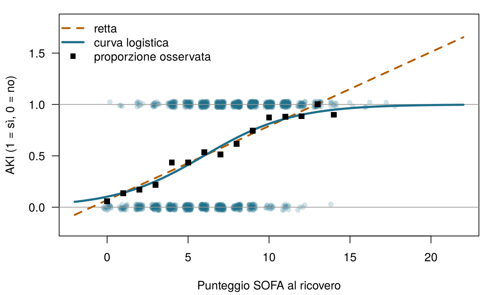
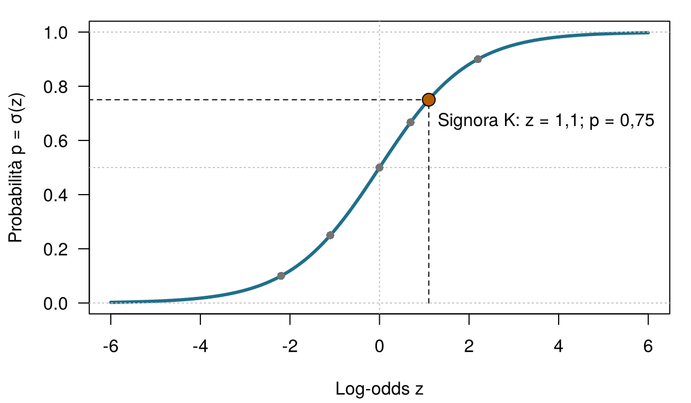
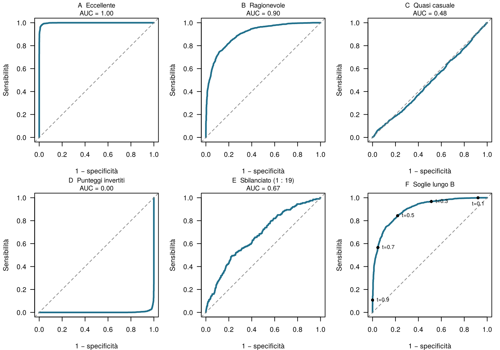
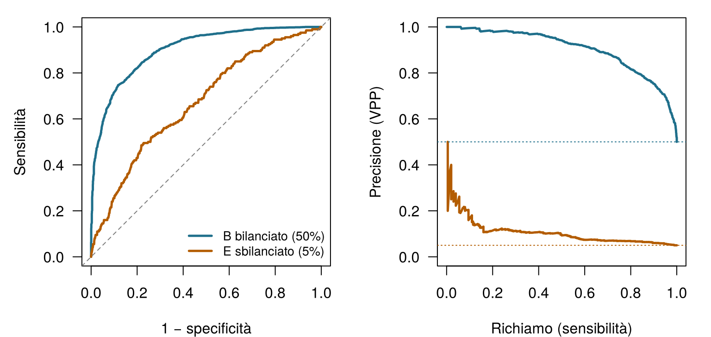
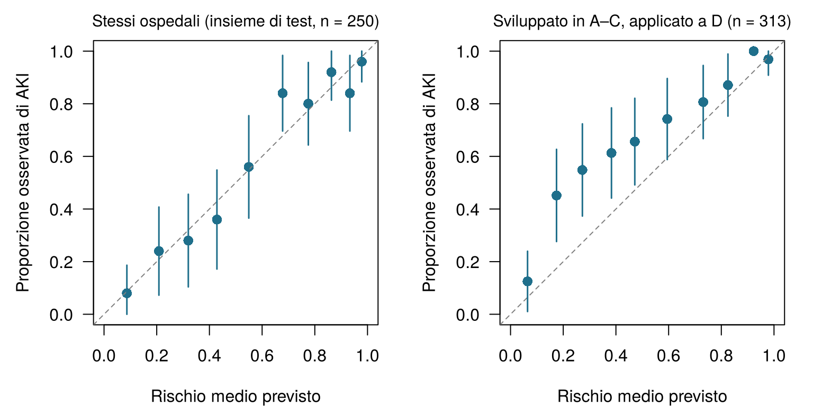

5 Classificazione, soglie e calibrazione
Quattro domande per scaldarti. Prova a indovinare: il capitolo risponde a ciascuna di esse.
| Domanda | La tua risposta |
|---|---|
| Una probabilità di 0,75 corrisponde a un odds di … (scrivi un numero) | |
| Un odds pari a 1 ("alla pari") corrisponde a una probabilità di … (scrivi un numero) | |
| L'allerta scatta quando il rischio previsto supera una soglia. Chi dovrebbe scegliere la soglia? | |
| Un modello assegna il 30% a un gruppo di 100 pazienti. È ben calibrato se … |
Come usare questo capitolo
Inizi da qui?
Questo capitolo prende in prestito alcune idee dai capitoli precedenti. In breve:
- Soglia decisionale (Sezione 1.5). Nel Capitolo 1 l’équipe del Reparto 7 ha confrontato il valore atteso dell’avvio di un bundle nefroprotettivo con quello delle cure standard. Con i punteggi scelti dall’équipe, il bundle era la scelta migliore ogni volta che la probabilità di AKI superava 0,25: la soglia.
- Insiemi di addestramento e di test (Sezione 1.8, Definizione 1.9). Un modello si giudica su pazienti che non sono stati usati per costruirlo; le scelte fatte durante la costruzione si giudicano con la validazione incrociata. Il Capitolo 3 ne fa una routine e mette in guardia dalla fuga di informazione (leakage): informazioni sull’esito che si infiltrano nei predittori.
- Sensibilità, specificità, VPP e VPN (Capitolo 2). Per un test sì/no, la sensibilità è la proporzione di persone con la condizione che risultano positive, la specificità la proporzione di persone senza la condizione che risultano negative, e il valore predittivo positivo (negativo) la proporzione di risultati positivi (negativi) corretti. I valori predittivi dipendono dalla prevalenza; sensibilità e specificità no.
- Verosimiglianza e perdita attesa (Capitolo 2). La verosimiglianza misura quanto sono probabili i dati osservati per dati valori dei parametri; la massima verosimiglianza sceglie i valori che rendono i dati più probabili. La perdita attesa pesa ogni possibile errore per la sua probabilità.
- Regressione lineare, coefficienti, ridge e lasso (Capitolo 4). Un modello lineare prevede \(\hat y = \beta_0 + \beta_1 x_1 + \dots + \beta_p x_p\); le penalità restringono i coefficienti per contrastare il sovradattamento.
| Esempio | Chi o che cosa | Esito | Volti che incontrerai |
|---|---|---|---|
| 1 Terapia intensiva del Reparto 7 | 1.250 pazienti di terapia intensiva in 4 ospedali | variazione della creatinina in 48 h (danno renale acuto se ≥ 0,3 mg/dL) | Aoife (71 anni, sepsi, rischio borderline), Tomás (54 anni, rischio basso), Priya (38 anni, rischio alto); la dott.ssa Emma Walsh; Seán, il farmacista |
| 2 Studio ONCO-1 | 1.000 pazienti randomizzati a ricevere o meno la chemioterapia | riduzione del tumore (%) | i pazienti #0042 e #0917 |
| 3 HomeBeat | 500 persone che indossano uno smartwatch a casa | punteggio di stress, evento di peggioramento | Lena |
| 4 CellWorks | 420 lotti di produzione di una terapia cellulare | punteggio di potenza | il lotto CW-118 |
Tutti e quattro i dataset sono simulati e si possono scaricare dall’appendice sui dati. La presentazione completa si trova in Sezione 1.1.
Questo capitolo trasforma l’output di un modello in una decisione. Incontrerai il modello logistico, il linguaggio degli odds e gli strumenti per giudicare un classificatore: la matrice di confusione, le curve ROC e precisione–richiamo, la calibrazione e le curve decisionali. Comprende tredici sezioni e un Laboratorio, sette verifiche rapide, tre widget “Prova tu”, una sfida e tre missioni di programmazione in R e Python. Calcola circa due ore.
La notazione in sintesi (solo per consultazione)
| Simbolo | Significato | Sezione |
|---|---|---|
| \(p\), \(\hat p\) | probabilità dell’evento (qui l’AKI) e sua stima da parte di un modello | Sezione 5.2 |
| \(z\) | predittore lineare \(\beta_0 + \beta_1 x_1 + \dots + \beta_p x_p\), sulla scala dei log-odds | Sezione 5.3 |
| \(\sigma(z)\) | funzione logistica (sigmoide) \(1/(1+e^{-z})\) | Sezione 5.3 |
| \(\beta_j\), \(e^{\beta_j}\) | coefficiente della variabile \(j\) e relativo odds ratio | Sezione 5.4 |
| \(t\) | soglia di classificazione | Sezione 5.6 |
| TP, FP, FN, TN | veri positivi, falsi positivi, falsi negativi, veri negativi | Sezione 5.6 |
| \(C_{\text{FP}}\), \(C_{\text{FN}}\) | danno di un falso positivo, di un falso negativo | Sezione 5.9 |
| NB\((t)\) | beneficio netto (net benefit) alla soglia \(t\) | Sezione 5.11 |
In questo capitolo \(p\) è una probabilità. Altrove nel libro \(p\) conta anche le variabili; il contesto chiarisce sempre di quale si tratta. L’elenco completo si trova nella pagina della notazione.
5.1 Dai numeri al sì o no
Nei Capitoli 1 e 4 l’esito del Reparto 7 era un numero: la variazione della creatinina in 48 ore. Ma Emma non agisce in base a un numero; agisce in base a una domanda con due risposte. Aoife svilupperà un AKI? Secondo il criterio KDIGO, si parla di AKI quando la creatinina aumenta di almeno 0,3 mg/dL entro 48 ore (Kidney Disease: Improving Global Outcomes (KDIGO) Acute Kidney Injury Work Group 2012); possiamo quindi trasformare la cartella di ogni paziente del passato in un esito binario: \(y_i = 1\) se il paziente \(i\) ha sviluppato un AKI e \(y_i = 0\) altrimenti. Dei 1.250 pazienti del passato, lo ha sviluppato il 58 %.
Prevedere una categoria anziché un numero si chiama classificazione. Un classificatore può restituire un’etichetta (“AKI” o “nessun AKI”), ma quelli utili restituiscono una probabilità, \(\hat p\), e lasciano l’etichetta a un passaggio successivo. Questo capitolo riguarda entrambi i passaggi: come stimare \(\hat p\) e come trasformarla in una decisione.
Perché non usare semplicemente la regressione lineare del Capitolo 4, con \(y\) codificata come 0 e 1? Si tratta del cosiddetto modello di probabilità lineare, e la Figura 5.1 ne mostra il difetto. La retta stimata sull’AKI (0/1) in funzione del SOFA prevede senza problemi “probabilità” superiori a 1 per i pazienti più gravi: 1,37 con un punteggio SOFA di 18. Con una variabile che spingesse il rischio nella direzione opposta, scenderebbe altrettanto tranquillamente sotto 0. Una probabilità non può uscire dall’intervallo tra 0 e 1; ci serve una curva che non possa farlo nemmeno lei.
La retta della Figura 5.1 prevede un valore di circa 1,5 per un paziente con un punteggio SOFA di 20. Qual è la lettura migliore?
5.2 Probabilità, odds e log-odds
Per costruire una curva che resti tra 0 e 1 facciamo una deviazione attraverso una scala che gli scommettitori usano da secoli: gli odds (le “quote”).
Definizione 5.1 (Odds e log-odds) L’odds di un evento con probabilità \(p\) è \(\dfrac{p}{1-p}\): quante volte è più probabile che l’evento accada piuttosto che no. Il log-odds (o logit) è il logaritmo naturale dell’odds, \(\operatorname{logit}(p) = \log\dfrac{p}{1-p}\). Le probabilità stanno tra 0 e 1, gli odds tra 0 e infinito, e i log-odds in qualsiasi punto della retta dei numeri.
Una probabilità di 0,75 corrisponde a un odds di \(0{,}75/0{,}25 = 3\), “tre a uno”: è tre volte più probabile che l’evento accada piuttosto che no. Un odds pari a 1 (“alla pari”) corrisponde a una probabilità di 0,5 e a un log-odds di 0. La Tabella 5.1 mostra qualche altro valore; nota la simmetria dell’ultima colonna.
| Probabilità \(p\) | Odds \(p/(1-p)\) | A parole | Log-odds |
|---|---|---|---|
| 0.10 | 0.11 | 1 a 9 | -2.2 |
| 0.25 | 0.33 | 1 a 3 | -1.1 |
| 0.50 | 1.00 | 1 a 1 (alla pari) | +0.0 |
| 0.67 | 2.00 | 2 a 1 | +0.7 |
| 0.75 | 3.00 | 3 a 1 | +1.1 |
| 0.90 | 9.00 | 9 a 1 | +2.2 |
Perché tanta fatica? Perché la scala dei log-odds non ha pareti. Una retta può spaziare da \(-\infty\) a \(+\infty\) senza mai produrre un valore impossibile, e ogni valore di log-odds corrisponde esattamente a una probabilità tra 0 e 1.
Nel Reparto 7 il 58 % dei pazienti del passato ha sviluppato un AKI. Qual è l’odds di AKI per un paziente scelto a caso?
5.3 Il modello logistico
La regressione logistica porta la retta del Capitolo 4 sulla scala dei log-odds (Cox 1958; Hosmer, Lemeshow, e Sturdivant 2013):
\[ \log\frac{p}{1-p} \;=\; z \;=\; \beta_0 + \beta_1 x_1 + \beta_2 x_2 + \dots + \beta_p x_p . \qquad(5.1)\]
Il membro di destra, \(z\), si chiama predittore lineare. Risolvendo la Equazione 5.1 rispetto a \(p\) si ottiene la probabilità:
\[ p \;=\; \sigma(z) \;=\; \frac{1}{1 + e^{-z}} . \qquad(5.2)\]
Definizione 5.2 (Funzione logistica e regressione logistica) La funzione logistica (o sigmoide) \(\sigma(z) = 1/(1+e^{-z})\) trasforma qualsiasi numero \(z\) in una probabilità tra 0 e 1, seguendo una curva a forma di S. La regressione logistica modella la probabilità di un esito binario come \(p = \sigma(\beta_0 + \beta_1 x_1 + \dots + \beta_p x_p)\): lineare sulla scala dei log-odds, a forma di S sulla scala delle probabilità.
La Figura 5.2 mostra la curva. Prendiamo la signora K, 68 anni, che arriva in pronto soccorso con un sospetto di infezione, un lattato di 5,2 mmol/L e un sistema immunitario indebolito. Supponiamo che un modello per la sepsi combini le sue caratteristiche in un predittore lineare \(z = +1{,}1\). Allora \(p = 1/(1+e^{-1{,}1}) = 0,75\). Il modello sta dicendo che, tra molti pazienti come la signora K, circa tre su quattro sviluppano una sepsi. È una probabilità, non una diagnosi: la signora K, lei, la sepsi o la svilupperà o non la svilupperà, e che cosa fare di fronte a un rischio del 75% è un’altra questione, l’argomento della Sezione 5.9.

Come si trovano i coefficienti \(\beta\)? Non con i minimi quadrati. La regressione logistica usa la massima verosimiglianza (vedi il Capitolo 2): tra tutti i valori possibili di \(\beta\), sceglie quelli che rendono più probabili gli esiti effettivamente osservati. Per un paziente che ha sviluppato un AKI il modello dovrebbe dare un \(\hat p_i\) alto; per uno che non lo ha sviluppato, un \(1-\hat p_i\) alto. Massimizzare la verosimiglianza equivale a minimizzare la perdita logaritmica (log-loss), la sorpresa media del modello di fronte a ciò che è accaduto davvero:
\[ \text{log-loss} = -\frac{1}{n}\sum_{i=1}^{n}\Big[\,y_i \log \hat p_i + (1-y_i)\log(1-\hat p_i)\Big]. \qquad(5.3)\]
Un modello che dice 0,99 per un paziente che poi non sviluppa un AKI paga un prezzo alto, \(-\log(0{,}01) \approx 4{,}6\); uno che dice 0,6 per un paziente che lo sviluppa paga solo \(-\log(0{,}6) \approx 0{,}5\). È la fase di “correzione” del ciclo di apprendimento del Capitolo 1 (tenta, correggi, aggiusta, ripeti): l’errore quadratico corregge un’ipotesi su un numero, la log-loss corregge un’ipotesi su un sì o un no. A differenza dei minimi quadrati, non esiste una formula che dia il \(\beta\) migliore in un solo passaggio; il computer aggiusta i coefficienti per iterazioni successive finché la log-loss smette di scendere (Hastie, Tibshirani, e Friedman 2009, cap. 4). Puoi farlo tu, a mano.
Adatta a mano la curva a S. I punti sono i 1.250 pazienti del Reparto 7 (AKI = 1 in alto, nessun AKI = 0 in basso) e i quadrati mostrano la proporzione osservata di AKI per ciascun punteggio SOFA. Il tuo modello è \(\hat p = \sigma(\beta_0 + \beta_1 \times \text{SOFA})\). Sposta i cursori e osserva la log-loss. Un modello che ignora il SOFA e assegna a tutti il rischio medio ha una log-loss di circa 0,68. Obiettivo: porta la log-loss sotto 0,58.
La curva migliore che puoi trovare con il solo SOFA ha una log-loss di circa 0,57, e la sua pendenza è positiva: ogni punto SOFA in più aumenta il log-odds di AKI. Con più variabili il computer fa la stessa ricerca in molte dimensioni contemporaneamente.
La regressione logistica si può anche disegnare come una piccola rete (Figura 5.3): ogni variabile viene moltiplicata per un peso, i prodotti vengono sommati a una costante e la somma passa attraverso la sigmoide. Questo è esattamente un singolo neurone artificiale. Nel Capitolo 7 ne impileremo molti per costruire reti neurali e, quando le classi sono più di due (normale, polmonite, tubercolosi), la sigmoide viene sostituita dalla sua generalizzazione a più classi, la softmax, che restituisce una probabilità per ciascuna classe (Goodfellow, Bengio, e Courville 2016, cap. 6). La stessa softmax sceglie la parola successiva nei modelli linguistici della Parte V.
flowchart LR
x1["x₁ (SOFA)"] --> w1["× β₁"]
x2["x₂ (lattato)"] --> w2["× β₂"]
xp["xₚ (…)"] --> wp["× βₚ"]
w1 --> SUM
w2 --> SUM
wp --> SUM
SUM["z = β₀ + Σ βⱼxⱼ"] --> ACT["σ(z)"]
ACT --> y["p̂ = probabilità di AKI"]
5.4 Leggere un modello stimato: gli odds ratio
Prima di stimare il modello del Reparto 7, un piccolo esempio svolto mostra come leggere i coefficienti logistici. Supponiamo che, tra 200 pazienti con sospetta infezione, 100 fossero immunodepressi e 100 no (Tabella 5.2).
| Sepsi | Nessuna sepsi | Rischio | Odds | |
|---|---|---|---|---|
| Immunodepressi | 30 | 70 | 30/100 = 0,30 | 30/70 = 0,43 |
| Non immunodepressi | 12 | 88 | 12/100 = 0,12 | 12/88 = 0,14 |
Definizione 5.3 (Odds ratio) L’odds ratio (OR, rapporto tra odds) confronta l’odds di un evento in due gruppi: \(\text{OR} = \text{odds}_1 / \text{odds}_0\). Un OR maggiore di 1 indica un odds più alto nel gruppo 1, minore di 1 un odds più basso, ed esattamente 1 nessuna differenza. Nella regressione logistica, \(e^{\beta_j}\) è l’odds ratio per un aumento di un’unità della variabile \(x_j\), a parità delle altre variabili.
Nella Tabella 5.2 l’odds ratio è \(0{,}43 / 0{,}14 \approx 3{,}1\): l’odds di sepsi è circa tre volte più alto nei pazienti immunodepressi. Una regressione logistica della sepsi sullo stato immunitario restituirebbe un coefficiente di \(\log 3{,}1 \approx 1{,}13\), ed \(e^{1{,}13} \approx 3{,}1\) ci riporta al punto di partenza. Nota che il rapporto tra i rischi (il rapporto tra le probabilità, o rischio relativo) è solo \(0{,}30/0{,}12 = 2{,}5\). Odds ratio e rischio relativo sono vicini solo quando l’esito è raro; per esiti frequenti l’odds ratio è più lontano da 1 e non va letto come “tre volte il rischio” (Zhang e Yu 1998). Nel Reparto 7 l’AKI è tutt’altro che raro.
Ora il caso reale. La Tabella 5.3 mostra una regressione logistica per l’AKI stimata sui 1000 pazienti di addestramento del Reparto 7, con cinque variabili rilevate al ricovero. Ogni odds ratio è riportato per un’unità di variazione che abbia senso clinico: la grandezza di un odds ratio dipende dall’unità, proprio come “per grammo” e “per chilogrammo” danno numeri diversi per lo stesso farmaco.
| Variabile | Coefficiente β | Unità | Odds ratio | IC 95% |
|---|---|---|---|---|
| Punteggio SOFA | 0.403 | 1 punto | 1.50 | 1.40 a 1.60 |
| Lattato | 0.297 | 1 mmol/L | 1.35 | 1.14 a 1.59 |
| Pressione arteriosa media minima | -0.036 | 10 mmHg | 0.70 | 0.60 a 0.82 |
| Creatinina di base | 2.341 | 0,5 mg/dL | 3.22 | 2.55 a 4.07 |
| Aderenza al protocollo | -2.642 | 10 punti percentuali | 0.77 | 0.70 a 0.85 |
Leggi la tabella riga per riga. Ogni punto SOFA in più moltiplica l’odds di AKI per 1,50, a parità delle altre quattro variabili. Una pressione minima più alta di 10 mmHg lo moltiplica per 0,70: perfusione migliore, odds più basso. Una creatinina di base più alta di 0,5 mg/dL lo moltiplica per 3,22, e 10 punti percentuali in più di aderenza al protocollo per 0,77. Valgono due avvertenze dei capitoli precedenti. Queste sono associazioni: il Capitolo 1 ha mostrato che il coefficiente dell’aderenza è confuso dalla gravità se la gravità non è nel modello (Sezione 1.10). E un odds ratio moltiplica gli odds, non le probabilità: lo stesso OR sposta un rischio del 10% molto meno, in termini assoluti, di un rischio del 50%.
Applicato ai pazienti di stasera, il modello dà i rischi della Tabella 5.4. Sono vicini ai valori illustrativi usati nel Capitolo 1: Aoife è in bilico, Tomás è a basso rischio e Priya a rischio molto alto.
| Paziente | Modello a cinque variabili | Modello con il solo SOFA |
|---|---|---|
| Aoife Byrne | 0.49 | 0.50 |
| Tomás Ruiz | 0.07 | 0.25 |
| Priya Nair | 0.99 | 0.90 |
Un modello per la sepsi pubblicato riporta, per i pazienti vaccinati contro l’influenza, un coefficiente di −0,36 (odds ratio 0,70). Quale lettura è corretta?
Dai coefficienti agli odds ratio. Il modello per l’AKI a cinque variabili è già stimato per te (sui 1.000 pazienti di addestramento della suddivisione condivisa, come nella Tabella 5.3), come fit in R e model in Python. I suoi coefficienti sono sulla scala dei log-odds. Riempi lo spazio vuoto con la funzione che li trasforma in odds ratio.
L’inversa del logaritmo naturale è la funzione esponenziale, exp().
round(exp(coef(fit)), 2)L’inversa del logaritmo naturale è np.exp().
pd.Series(np.round(np.exp(model.coef_[0]), 2), index=features)5.5 Un secondo esempio: chi risponde in ONCO-1?
Nello studio ONCO-1 i pazienti sono stati randomizzati a ricevere o meno la chemioterapia, e le dimensioni del tumore sono state misurate prima e dopo. Un paziente ha una risposta elevata se il tumore si è ridotto di almeno il 30%, una regola ispirata ai criteri RECIST per la risposta parziale (Eisenhauer et al. 2009). La colonna binaria high_response la registra. La Tabella 5.5 mostra l’esito per braccio di trattamento nella versione dello studio usata nel browser.
| Braccio | Senza risposta elevata | Con risposta elevata | Totale |
|---|---|---|---|
| Chemioterapia | 104 | 392 | 496 |
| Nessuna chemioterapia | 502 | 2 | 504 |
Solo 2 dei 504 pazienti non trattati hanno avuto una risposta elevata. L’odds ratio della chemioterapia è quindi enorme, circa 950, e una regressione logistica restituisce un coefficiente vicino a 6,9 con un intervallo di confidenza molto ampio. Non leggerlo come “la chemioterapia moltiplica l’odds di risposta per quasi mille”. Quando un gruppo non ha quasi nessun evento, i dati si avvicinano alla separazione: una variabile (qui, il trattamento) prevede l’esito in modo quasi perfetto, e la stima di massima verosimiglianza scivola verso l’infinito; con una separazione perfetta non esiste affatto (Albert e Anderson 1984). La sintesi onesta è “senza chemioterapia non risponde quasi nessuno”, non un odds ratio preciso. La stima penalizzata (Sezione 5.12) o la verosimiglianza con riduzione della distorsione di Firth (Firth 1993) forniscono stime finite e più sensate.
La domanda clinicamente interessante è un’altra: tra i pazienti che ricevono la chemioterapia, chi risponde? È una decisione su chi trattare, o su chi trattare in un altro modo. Stimato sui 412 pazienti in chemioterapia dell’insieme di addestramento condiviso del libro, con intensità di dose, grado tumorale, performance status, età e tre geni, il modello dà gli odds ratio della Tabella 5.6. I geni sono misurati in deviazioni standard, quindi i loro odds ratio confrontano pazienti a una deviazione standard di distanza.
| Variabile | Coefficiente β | Odds ratio |
|---|---|---|
| Intensità di dose (per 0,1) | 1.23 | 3.4e+00 |
| Grado tumorale G2 vs G1 | 0.66 | 1.9e+00 |
| Grado tumorale G3 vs G1 | 2.60 | 1.3e+01 |
| Performance status (per punto; più alto = peggiore) | -1.37 | 2.5e-01 |
| Età (per 10 anni) | 0.69 | 2.0e+00 |
| gene_01 (per DS) | 3.54 | 3.5e+01 |
| gene_05 (per DS) | -7.47 | 5.7e-04 |
| gene_12 (per DS) | 2.54 | 1.3e+01 |
Una dose più alta e un grado più alto si accompagnano a un odds di risposta più alto, un performance status peggiore a un odds più basso; gene_01 e gene_12 aumentano l’odds e gene_05 lo abbassa nettamente. In questo studio simulato i pazienti più anziani rispondono leggermente più spesso. È così che sono stati generati i dati, non un’affermazione clinica, e un promemoria per confrontare ogni segno con ciò che ti aspetti. Nota anche che cosa non c’è nel modello: i geni 08, 14 e 19. Nella simulazione sono copie rumorose della riduzione del tumore stessa, la trappola della fuga di informazione descritta nel Capitolo 3. Un modello che li usasse sembrerebbe eccellente e sarebbe inutile, perché sono “noti” solo quando lo è già la risposta.
I pazienti #0042 e #0917, che abbiamo incontrato nel Capitolo 4, sono due dei pazienti in chemioterapia dell’insieme di test, quindi il modello è stato stimato senza di loro. Sulla carta si somigliano: la stessa intensità di dose (1,07), tumori di grado G1, lo stesso performance status (2), 37 e 46 anni. Le risposte sono state diverse: il tumore di #0042 si è ridotto del 36,6 % (risposta elevata), quello di #0917 del 20,4 % (risposta non elevata). Il modello della Tabella 5.6 assegna loro probabilità di risposta elevata di 0,78 e 0,02: la direzione giusta, ma un “no” quasi certo per un paziente il cui profilo clinico è quasi identico a quello di un responder, dovuto a piccole differenze in tre geni. Il modello lasso della Sezione 5.12, il modello principale del capitolo per ONCO-1, è più prudente: 0,75 e 0,18. Come per Aoife, il modello fornisce un’informazione. Se fosse stato disponibile prima del trattamento, che cosa l’oncologo e ciascun paziente avrebbero fatto con una probabilità del 18 % di risposta elevata, considerando la tossicità del trattamento e le alternative, è una decisione che richiede i loro valori, e due pazienti che sulla carta sembrano uguali possono comunque rispondere in modo diverso.
Un collega stima una regressione logistica sull’intero dataset di ONCO-1 e riferisce: “La chemioterapia ha un odds ratio di circa 950 (IC 95% da circa 230 a 3.900).” Qual è il problema principale?
5.6 Dalla probabilità alla decisione: la matrice di confusione
Il modello assegna ad Aoife una probabilità. L’allerta sullo schermo di Emma ha bisogno di un sì o di un no. Il ponte tra le due cose è una soglia.
Definizione 5.4 (Soglia di classificazione) Una soglia di classificazione \(t\) trasforma una probabilità prevista in una decisione: classificare come positivo (e agire) quando \(\hat p \ge t\), come negativo altrimenti. La soglia non è una proprietà del modello: lo stesso modello può essere usato con soglie diverse per scopi diversi.
Una volta fissata la soglia, ogni paziente del test ricade in una di quattro celle (Figura 5.4), e la tabella dei conteggi è la matrice di confusione.
Definizione 5.5 (Matrice di confusione, accuratezza, precisione, richiamo e F1) La matrice di confusione incrocia le classi previste e quelle reali in veri positivi (TP, dall’inglese true positives), falsi positivi (FP), falsi negativi (FN) e veri negativi (TN). Da essa si ricavano: l’accuratezza \(= (\text{TP}+\text{TN})/n\), la proporzione di classificazioni corrette; la precisione \(= \text{TP}/(\text{TP}+\text{FP})\), cioè il valore predittivo positivo; il richiamo (recall) \(= \text{TP}/(\text{TP}+\text{FN})\), cioè la sensibilità; e il punteggio F1 \(= 2 \cdot \text{precisione} \cdot \text{richiamo} / (\text{precisione} + \text{richiamo})\), la loro media armonica (Fawcett 2006; Rijsbergen 1979).
Sensibilità, specificità e valori predittivi sono stati introdotti per i test diagnostici nel Capitolo 2; l’apprendimento automatico chiama spesso la sensibilità richiamo (recall) e il VPP precisione. I nomi cambiano, i conteggi no. La Tabella 5.7 applica il modello a cinque variabili ai 250 pazienti di test del Reparto 7, con la soglia dello 0,5 adottata dall’ospedale e con quella di 0,25 proposta da Seán.
| TP | FP | FN | TN | Sensibilità | Specificità | VPP | VPN | Accuratezza | F1 | |
|---|---|---|---|---|---|---|---|---|---|---|
| t = 0.50 | 122 | 25 | 25 | 78 | 0.83 | 0.76 | 0.83 | 0.76 | 0.80 | 0.83 |
| t = 0.25 | 140 | 63 | 7 | 40 | 0.95 | 0.39 | 0.69 | 0.85 | 0.72 | 0.80 |
Abbassare la soglia da 0,5 a 0,25 intercetta più pazienti che poi sviluppano un AKI (la sensibilità sale da 0,83 a 0,95, quindi i falsi negativi scendono da 25 a 7), al prezzo di più bundle inutili (i falsi positivi salgono da 25 a 63). L’accuratezza scende da 0,80 a 0,72, eppure per un’équipe che teme un AKI non riconosciuto più di un bundle in più, 0,25 può essere la scelta migliore. L’accuratezza conta ogni errore come ugualmente grave, e in medicina ciò è vero di rado. È anche fuorviante quando una classe è rara: se solo il 2% dei pazienti avesse un evento, un “modello” che non segnala mai nessuno sarebbe accurato al 98% e inutile.
5.7 Curve ROC e AUC
Ogni soglia dà una matrice di confusione, una sensibilità e una specificità. Facendo scorrere \(t\) da 1 a 0 si traccia una curva.
Definizione 5.6 (Curva ROC e AUC) La curva ROC (receiver operating characteristic, caratteristica operativa del ricevitore) rappresenta la sensibilità (tasso di veri positivi) in funzione di \(1-\)specificità (tasso di falsi positivi) per ogni soglia possibile. L’area sotto la curva ROC (AUC) la riassume in un solo numero: la probabilità che un paziente con l’evento, scelto a caso, riceva un rischio previsto più alto di un paziente senza l’evento, anch’esso scelto a caso. Un’AUC di 0,5 non è migliore del lancio di una moneta; 1 corrisponde a un ordinamento perfetto.
Vale la pena ricordare la lettura probabilistica dell’AUC, dovuta a Hanley e McNeil (1982): dice che l’AUC misura la discriminazione, cioè quanto bene il modello ordina i pazienti, e nient’altro. Non dipende dalla soglia e non le importa se le probabilità previste siano giuste in termini assoluti. Moltiplicare tutti i rischi per un mezzo lascerebbe l’AUC invariata.
La Figura 5.5 mostra l’aspetto delle curve ROC in sei situazioni simulate, estranee ai nostri esempi ricorrenti (Fawcett 2006). Un modello eccellente aderisce all’angolo in alto a sinistra; uno ragionevole si incurva sopra la diagonale; un modello che tira a indovinare segue la diagonale; un modello invertito, i cui punteggi vanno nella direzione sbagliata, cade sotto di essa (segno che qualcosa nei dati o nelle etichette è rovesciato: invertendone i punteggi diventerebbe eccellente). Il quinto pannello ha classi fortemente sbilanciate, un positivo ogni 19 negativi: la sua curva ROC sembra rispettabile, un punto su cui torniamo nella Sezione 5.8. L’ultimo pannello segna le soglie lungo la curva del modello ragionevole: abbassare \(t\) ti sposta verso l’alto e verso destra.

Si citano spesso regole pratiche (AUC 0,7–0,8 “accettabile”, 0,8–0,9 “eccellente”) (Hosmer, Lemeshow, e Sturdivant 2013), ma un numero da solo dice poco. Sull’insieme di test del Reparto 7 il modello a cinque variabili ha un’AUC di 0,85. È un buon risultato? Dipende dalle alternative. Il modello con il solo SOFA arriva a 0,77, e “nessun modello” (lo stesso rischio per tutti) ha un’AUC esattamente di 0,5. È la regola del confronto di riferimento: ogni nuovo modello va confrontato con un riferimento semplice e con la pratica corrente, sugli stessi pazienti. Un’AUC di 0,81 riportata senza un riferimento non ti ha detto nulla; una rete profonda che arriva a 0,83 dove la regressione logistica arriva a 0,82 potrebbe non valere la sua opacità. In molti studi di previsione clinica, i metodi flessibili di apprendimento automatico in media non hanno superato una regressione logistica ben costruita (Christodoulou et al. 2019).
Il modello per l’AKI di un fornitore ha un’AUC di 0,85 sui dati del tuo ospedale. Quale affermazione ne consegue?
5.8 Curve precisione–richiamo quando i positivi sono rari
La curva ROC ha un punto cieco. Ciascuno dei suoi due assi è calcolato all’interno di una classe (la sensibilità tra i pazienti con l’evento, il tasso di falsi positivi tra quelli senza), quindi la curva ROC e l’AUC ignorano quanto sia frequente l’evento. Quando l’evento è raro, anche un tasso di falsi positivi piccolo può tradursi in molti falsi positivi in numeri assoluti, che sommergono quelli veri.
Definizione 5.7 (Curva precisione–richiamo) La curva precisione–richiamo (PR) rappresenta la precisione (VPP) in funzione del richiamo (sensibilità) per ogni soglia. Un modello che tira a indovinare ha una curva PR piatta all’altezza della prevalenza dell’evento; l’area sotto la curva PR viene spesso riportata insieme all’AUC quando i positivi sono rari.
La Figura 5.6 confronta il modello bilanciato ragionevole (pannello B qui sopra) con quello sbilanciato (pannello E). Nel grafico ROC il modello sbilanciato sembra soltanto mediocre; nel grafico PR la sua debolezza è evidente: per intercettare metà dei positivi segnala molti più negativi che positivi, e la sua precisione resta di poco sopra la prevalenza del 5%. Per esiti rari, come una reazione avversa rara a un farmaco o una malattia rara nello screening, riporta le curve PR oltre alle curve ROC (Saito e Rehmsmeier 2015). Il Reparto 7 è il caso opposto: con un AKI in più della metà dei pazienti, le due curve raccontano storie simili.

5.9 La soglia è un giudizio di valore
Un modello di screening assegna a una persona una probabilità di 0,23 di neoplasia colorettale avanzata. Inviarla alla colonscopia oppure no? Il modello non può rispondere, perché la risposta dipende da quanto è grave ciascun errore. Una soglia più bassa intercetta più malattia e sottopone più persone sane a una procedura invasiva; una più alta le risparmia e lascia sfuggire più malattia. I programmi di screening tendono a privilegiare la sensibilità, perché un tumore non diagnosticato è molto peggio di una colonscopia inutile. Il valore soglia è il punto in cui i valori clinici entrano nel modello.
Il Capitolo 1 ha già mostrato come rendere tutto questo preciso, e il Capitolo 2 gli ha dato il nome di perdita attesa. Sia \(C_{\text{FN}}\) il danno di un falso negativo (un AKI che l’équipe non è riuscita a prevenire) e \(C_{\text{FP}}\) il danno di un falso positivo (un bundle inutile), entrambi rispetto a una decisione corretta. Per un paziente con rischio \(p\), agire ha un danno atteso \((1-p)\,C_{\text{FP}}\) e non agire ha un danno atteso \(p\,C_{\text{FN}}\). Agire è meglio quando \(p\,C_{\text{FN}} > (1-p)\,C_{\text{FP}}\), cioè quando \(p\) supera
\[ t^{*} = \frac{C_{\text{FP}}}{C_{\text{FP}} + C_{\text{FN}}} . \qquad(5.4)\]
È l’approccio a soglia alle decisioni cliniche (Pauker e Kassirer 1980). Se un AKI non riconosciuto è tre volte peggio di un bundle inutile, \(t^{*} = 1/(1+3) = 0{,}25\): esattamente la soglia che l’équipe del Reparto 7 ha trovato con il widget del valore atteso della Sezione 1.5. Letta al contrario, l’equazione dice che cosa implica una soglia: lo 0,5 dell’ospedale afferma che un AKI non riconosciuto e un bundle inutile sono ugualmente gravi. Nessuno nel Reparto 7 lo crede. In modo equivalente, l’odds alla soglia, \(t^{*}/(1-t^{*})\), è uguale al rapporto tra i danni \(C_{\text{FP}}/C_{\text{FN}}\), un legame che useremo di nuovo per le curve decisionali. La Equazione 5.4 presuppone che le probabilità siano calibrate; se non lo sono, la soglia giusta per i numeri del modello non è la soglia giusta per il rischio del paziente (Sezione 5.10).
Soglia, matrice di confusione, ROC e costi. I 250 pazienti di test del Reparto 7 hanno ricevuto un punteggio dal modello a cinque variabili. Sposta la soglia e osserva la matrice di confusione, il punto sulla curva ROC e il danno totale. Imposta il danno di un AKI non riconosciuto rispetto a un bundle inutile (il giudizio di valore dell’équipe). Il danno è contato per 100 pazienti, in unità di “un bundle inutile”. Obiettivo: trova una soglia il cui danno sia entro il 10% dal minimo possibile, con un rapporto tra i danni diverso da 1.
Con soli 250 pazienti di test, la soglia migliore empirica oscilla intorno al \(t^{*}\) teorico; con un rapporto tra i danni pari a 3 cade vicino a 0,25, come prevede l’equazione. Nota quanto è piatta la curva del danno vicino al minimo: la soglia esatta conta meno che azzeccarne l’ordine di grandezza e, quindi, i valori che la sostengono.
Chi stabilisce la soglia? Il fornitore che costruisce il modello, l’ospedale che lo acquista, il clinico che lo usa o il paziente che ne subisce le conseguenze? Una soglia nascosta in un software è un giudizio di valore espresso per conto di tutti, spesso da chi ne è meno toccato. La buona pratica è riportare le probabilità del modello insieme alle prestazioni su un intervallo di soglie (Collins et al. 2015), concordare apertamente le soglie locali e, dove possibile, lasciare che la soglia rifletta i valori del singolo paziente. Lo 0,49 di Aoife significa una cosa per un’équipe che teme la dialisi e un’altra per una che teme antibiotici sottodosati.
Per ciascun uso di un modello di rischio, sceglieresti una soglia relativamente bassa (agire anche con un rischio modesto) o relativamente alta (agire solo quando il rischio è elevato)?
- Invitare le persone a un esame del sangue economico e sicuro come primo passo di un programma di screening oncologico. Soglia bassa
- Raccomandare un intervento chirurgico profilattico con complicanze gravi. Soglia alta
- Avviare il bundle nefroprotettivo del Reparto 7 quando un AKI non riconosciuto è giudicato molto peggio di un bundle inutile. Soglia bassa
- Rilasciare un lotto CellWorks per l’infusione senza ulteriori test (l’“evento” è il lotto supera i controlli). Soglia alta
- Segnalare i partecipanti di HomeBeat per una telefonata di un’infermiera, quando la chiamata è breve e gradita. Soglia bassa
- Sottoporre un paziente di ONCO-1 a una biopsia tumorale aggiuntiva, un esame invasivo che cambia raramente il trattamento. Soglia alta
La soglia di Seán. Le previsioni del modello a cinque variabili per i 250 pazienti di test sono caricate come test (colonne aki e p_model). L’équipe giudica un AKI non riconosciuto tre volte più dannoso di un bundle inutile. Imposta la soglia che discende dalla Equazione 5.4 e calcola sensibilità e specificità.
\(t^{*} = C_{\text{FP}}/(C_{\text{FP}} + C_{\text{FN}}) = 1/(1+3)\).
thr <- 0.25\(t^{*} = C_{\text{FP}}/(C_{\text{FP}} + C_{\text{FN}}) = 1/(1+3)\).
thr = 0.255.10 Calibrazione: ci si può fidare del numero?
La seconda domanda di Seán era se “50%” significhi 50%. L’AUC non può rispondere, perché guarda solo l’ordine delle previsioni. Un modello può ordinare perfettamente i pazienti e annunciare comunque rischi sistematicamente troppo alti o troppo bassi.
Definizione 5.8 (Calibrazione) Un modello è calibrato quando le sue probabilità previste corrispondono alle frequenze osservate: tra i pazienti a cui viene assegnato un rischio di circa il 30%, circa il 30% ha l’evento. Un grafico di calibrazione raggruppa i pazienti in base al rischio previsto e rappresenta la proporzione osservata con l’evento in funzione della previsione media di ciascun gruppo; un modello calibrato giace sulla diagonale. L’intercetta di calibrazione (o calibrazione globale, calibration-in-the-large) verifica se le previsioni sono in media troppo alte o troppo basse (valore ideale 0); la pendenza di calibrazione verifica se sono troppo estreme o troppo timide (valore ideale 1) (Van Calster et al. 2019).
La calibrazione è stata definita il tallone d’Achille dell’analisi predittiva (Van Calster et al. 2019): viene riportata molto meno spesso dell’AUC, eppure un modello mal calibrato può portare a decisioni dannose, perché la Equazione 5.4 confronta il rischio previsto con una soglia come se fosse il rischio vero (Steyerberg 2019). Una semplice misura complessiva che premia sia la discriminazione sia la calibrazione è il punteggio di Brier (Brier score), la media dei quadrati delle differenze tra probabilità previste ed esiti (0 è il valore perfetto) (Brier 1950). Sull’insieme di test del Reparto 7 il punteggio di Brier del modello è 0,149, contro 0,242 se si assegna a tutti il rischio medio.
La Figura 5.7 mostra due grafici di calibrazione. A sinistra, il modello è verificato sull’insieme di test casuale degli stessi quattro ospedali: i punti seguono da vicino la diagonale (intercetta di calibrazione 0,04, pendenza 1,01). A destra, le stesse cinque variabili sono state usate per stimare un modello solo sugli ospedali A–C, poi applicato all’ospedale D, dove l’AKI è più frequente (68 % invece di 55 %). La sua AUC nell’ospedale D è ancora 0,82, buona come a casa, ma le sue previsioni sono sistematicamente troppo basse: in media 54 % previsto contro 68 % osservato (intercetta di calibrazione 0,90). Nell’ospedale D un paziente indicato al 20% ha in realtà un rischio più alto, e una soglia scelta con la Equazione 5.4 porterebbe a trattare troppo poco.

La lezione vale in generale: la discriminazione spesso si trasferisce meglio della calibrazione. La casistica, la pratica locale e il modo in cui vengono registrati gli esiti spostano il rischio di base tra un ospedale e l’altro e nel tempo. Il rimedio abituale è la ricalibrazione: mantenere i coefficienti del modello ma stimare di nuovo l’intercetta (ed eventualmente la pendenza) sui dati locali (Steyerberg 2019). La calibrazione conta ben oltre la regressione logistica. I modelli flessibili, come gli alberi con boosting e le reti neurali, sono spesso troppo sicuri di sé (Niculescu-Mizil e Caruana 2005; Guo et al. 2017), e nel Capitolo 18 porremo la stessa domanda a un modello linguistico che dice di essere “sicuro al 90%”.
Dopo il trasferimento del modello all’ospedale D, la sua AUC è invariata ma la sua intercetta di calibrazione è chiaramente positiva. Che cosa significa per Emma, se lavora nell’ospedale D?
5.11 Curve decisionali: vale la pena usare il modello?
Ora abbiamo un modello che discrimina, una soglia che riflette dei valori e una verifica che le probabilità siano affidabili. Resta una domanda, quella che un ospedale dovrebbe porsi prima di attivare l’allerta: agire in base a questo modello fa più bene che male, rispetto alle semplici alternative di trattare tutti o non trattare nessuno? L’analisi delle curve decisionali risponde a questa domanda (Vickers e Elkin 2006; Vickers, Van Calster, e Steyerberg 2016).
Definizione 5.9 (Beneficio netto e curva decisionale) Alla soglia \(t\), il beneficio netto (net benefit) dell’agire in base a un modello è \[\text{NB}(t) = \frac{\text{TP}}{n} - \frac{\text{FP}}{n}\cdot\frac{t}{1-t},\] la proporzione di veri positivi meno la proporzione di falsi positivi pesata per l’odds alla soglia, che (per la Equazione 5.4) è uguale al rapporto tra i danni \(C_{\text{FP}}/C_{\text{FN}}\). Una curva decisionale rappresenta NB\((t)\) in funzione di \(t\) su un intervallo di soglie ragionevoli, per il modello e per le strategie “trattare tutti” e “non trattare nessuno” (il cui beneficio netto è 0) (Vickers e Elkin 2006).
Il beneficio netto si misura in unità di veri positivi: un beneficio netto di 0,30 equivale a trovare 30 veri casi di AKI ogni 100 pazienti senza alcun bundle inutile. Il peso \(t/(1-t)\) converte i falsi positivi nella stessa valuta: a \(t = 0{,}25\) l’équipe accetta tre bundle inutili per prevenire un AKI, quindi ogni falso positivo costa un terzo di un vero positivo. “Trattare tutti” ha \(\text{TP}/n\) uguale alla prevalenza e \(\text{FP}/n\) uguale a uno meno la prevalenza.
Una curva decisionale per il Reparto 7. Beneficio netto sui 250 pazienti di test per il modello a cinque variabili, il modello con il solo SOFA, il trattare tutti e il non trattare nessuno. Scegli l’intervallo di soglie che la tua équipe considera ragionevole e leggi quale strategia è la migliore.
Spiccano tre letture. A soglie molto basse, quando l’équipe darebbe il bundle quasi a chiunque, trattare tutti è buono quanto il modello (a \(t = 0{,}10\): 0,548 per il modello, 0,542 per trattare tutti), quindi il modello aggiunge poco: se tutti vengono comunque trattati, una previsione non cambia nulla. Intorno alla soglia di 0,25 dell’équipe il modello è migliore del trattare tutti (0,476 contro 0,451) e migliore del modello con il solo SOFA (0,459). E a soglie alte trattare tutti diventa dannoso (beneficio netto negativo), mentre il modello resta sopra lo zero. È il valore dell’informazione del Capitolo 1 reso misurabile: un modello vale la pena solo dove può cambiare le decisioni in meglio.
A una soglia di 0,25, un modello ha un beneficio netto di 0,40 e “trattare tutti” ha 0,38. Qual è la sintesi migliore?
Il beneficio netto alla soglia di Seán. Usando le previsioni di test (test), calcola il beneficio netto del modello a \(t = 0{,}25\) e confrontalo con il trattare tutti. Riempi lo spazio vuoto con il peso che converte i falsi positivi in unità di veri positivi.
Il peso è l’odds alla soglia, \(t/(1-t)\); nel codice la soglia si chiama thr. Guarda la riga di nb_all.
nb_model <- tp / n - fp / n * (thr / (1 - thr))Il peso è l’odds alla soglia, \(t/(1-t)\); nel codice la soglia si chiama thr. Guarda la riga di nb_all.
nb_model = tp / n - fp / n * (thr / (1 - thr))5.12 Regressione logistica penalizzata
Quando le variabili sono molte e gli eventi relativamente pochi, una regressione logistica ordinaria va incontro a sovradattamento proprio come la regressione lineare, e la quasi-separazione peggiora le cose: alcuni coefficienti scappano verso l’infinito. I rimedi del Capitolo 4 valgono senza modifiche. La ridge (una penalità L2) restringe tutti i coefficienti verso lo zero; il lasso (L1) può azzerarne alcuni esattamente, selezionando le variabili; l’elastic net combina le due (Hoerl e Kennard 1970; Tibshirani 1996; Zou e Hastie 2005). L’unica differenza è che la penalità si aggiunge alla log-loss della Equazione 5.3 anziché alla somma degli errori quadratici, e l’intensità \(\lambda\) si sceglie con la validazione incrociata, per esempio con glmnet e family = "binomial" (Friedman, Hastie, e Tibshirani 2010).
Torniamo ai pazienti di ONCO-1 in chemioterapia e diamo ai modelli tutto: dose, grado, performance status, età e tutti i 47 geni del dataset del browser tranne i tre che causano fuga di informazione, cioè 51 predittori per un insieme di addestramento di 412 pazienti, di cui solo circa un quinto non ha una risposta elevata. La Tabella 5.8 confronta i modelli sui pazienti di test tenuti da parte.
| Modello | AUC | Punteggio di Brier | Pendenza di calibrazione | Intercetta di calibrazione | Coefficienti non nulli |
|---|---|---|---|---|---|
| Prevalenza: tasso di risposta elevata nell’addestramento (nessun modello) | 0,500 | 0,190 | n/d | -0,279 | n/d |
| Regressione logistica, 7 predittori scelti (dose, grado, performance, età, geni 01/05/12) | 0,987 | 0,038 | 1,037 | 0,327 | 8 |
| Regressione logistica (non penalizzata), tutti i 51 predittori | 0,896 | 0,110 | 0,145 | -4,891 | 52 |
| Regressione logistica lasso (λ min) | 0,985 | 0,041 | 1,353 | 0,212 | 27 |
| Regressione logistica elastic net (α = 0,5, λ min) | 0,985 | 0,040 | 1,703 | 0,029 | 38 |
| Regressione logistica ridge (λ min) | 0,978 | 0,067 | 3,210 | -0,194 | 52 |
Il modello non penalizzato con tutti i 51 predittori è il peggiore dei cinque modelli: si adatta al rumore dei pazienti di addestramento e lo paga sui pazienti nuovi, con la quasi separazione che spinge le sue previsioni verso 0 o 1 (pendenza di calibrazione 0,15, molto sotto l’ideale di 1). La restrizione dei coefficienti lo salva. Il lasso conserva 27 dei 52 coefficienti, e i suoi tre coefficienti genici più grandi appartengono a gene_05, gene_01, gene_12: per come è costruita la simulazione, i geni che determinano davvero la risposta. Il modello piccolo, con sette predittori scelti a mano, fa bene quanto il lasso (AUC 0,987 contro 0,985), ma solo perché sappiamo come sono stati generati i dati; con geni reali, quella conoscenza è proprio ciò che manca, e la penalizzazione è un modo rigoroso per cercarla. Il Capitolo 6 confronta questi geni con quelli che trovano alberi e foreste, e il Capitolo 12 si chiede se una qualsiasi di queste graduatorie possa essere presa come spiegazione.
5.12.1 Ward 7: il confronto fin qui
Le stesse penalità si possono applicare al modello per l’AKI a cinque variabili. La Tabella 5.9 raccoglie tutti i modelli per l’AKI fin qui, tutti stimati sugli stessi 1.000 pazienti di addestramento della suddivisione condivisa e valutati sugli stessi 250 pazienti; ridge e lasso usano le stesse cinque variabili, standardizzate sui pazienti di addestramento, con λ scelto sulle partizioni condivise. Le righe aggiunte in questo capitolo sono in grassetto.
| Capitolo | Modello | Predittori | Log-loss VC | AUC | Punteggio di Brier | Pendenza di calibrazione | Intercetta di calibrazione |
|---|---|---|---|---|---|---|---|
| 1 | Prevalenza: tasso di AKI nell’addestramento (nessun modello) | nessuno | 0,683 | 0,500 | 0,242 | n/d | 0,041 |
| 5 | Regressione logistica, solo SOFA | SOFA | 0,577 | 0,766 | 0,193 | 1,014 | 0,047 |
| 5 | Regressione logistica (non penalizzata), il modello principale | P5 | 0,495 | 0,855 | 0,149 | 1,009 | 0,039 |
| 5 | Regressione logistica ridge (λ min) | P5 | 0,499 | 0,855 | 0,152 | 1,246 | 0,039 |
| 5 | Regressione logistica lasso (λ min) | P5 | 0,495 | 0,855 | 0,149 | 1,025 | 0,038 |
Sul Ward 7 le penalità non cambiano quasi nulla: con 1.000 pazienti e cinque variabili c’è poco da restringere. Il modello logistico principale, la ridge e il lasso raggiungono tutti un’AUC di 0,855, e i loro punteggi di Brier differiscono solo alla terza cifra decimale (0,149, 0,152 e 0,149), proprio come ridge e lasso hanno eguagliato i minimi quadrati per la variazione della creatinina nel Capitolo 4. La ridge tira le sue previsioni un po’ verso la media, e lo si vede nella sua pendenza di calibrazione di 1,25: le sue previsioni sono un po’ troppo timide. Tutti e tre sono molto avanti rispetto al modello con il solo SOFA (AUC 0,77, Brier 0,193) e al dare a tutti il tasso di AKI dell’addestramento (Brier 0,242). Anche i rischi di stasera si muovono appena: Aoife riceve 0,50 dalla ridge e 0,49 dal lasso. Il Capitolo 6 aggiunge alberi e foreste a questa tabella.
5.13 Il posto di questo capitolo nel ciclo decisionale
Nel ciclo decisionale del Capitolo 1, questo capitolo è il cardine tra informazione e decisione. La regressione logistica (Sezione 5.3) trasforma i dati in una probabilità; gli odds ratio (Sezione 5.4) ci dicono come ogni variabile la sposta; le curve ROC e PR (Sezione 5.7, Sezione 5.8) misurano quanto bene ordina i pazienti; la calibrazione (Sezione 5.10) verifica che il numero in sé sia credibile; la soglia (Sezione 5.9) è il punto in cui entrano i valori dei pazienti e dei clinici; e la curva decisionale (Sezione 5.11) si chiede se l’intera catena faccia più bene che male. Che cosa può andare storto? Un’AUC impressionante senza riferimento; una soglia predefinita di 0,5 che tratta in silenzio tutti gli errori come uguali; un modello che in un nuovo ospedale ordina bene ma le cui probabilità sono sbagliate; odds ratio letti come rischi relativi, o presi alla lettera in caso di separazione. Chi mantiene il controllo? Chi stabilisce la soglia: ecco perché dovrebbe essere fissata apertamente, dalle persone che ne vivono le conseguenze.
5.14 Laboratorio: dal rischio alla decisione nel Reparto 7
Il Laboratorio raccoglie in un unico posto i passaggi del capitolo per il modello dell’AKI del Reparto 7, usando R di base e, in Python, scikit-learn (Pedregosa et al. 2011). Eseguilo qui, oppure scaricalo ed eseguilo sul tuo computer: ch05_lab.it.R · ch05_lab.it.py.
Entrambi i linguaggi usano la suddivisione addestramento/test condivisa del libro, quindi concordano a meno degli arrotondamenti; la versione Python stampa i risultati senza i grafici. Due osservazioni da portare con te. Primo, con \(t = 0{,}25\) Aoife viene segnalata e Tomás no, che è ciò che richiedono i valori dell’équipe; con lo 0,5 dell’ospedale resta appena sotto l’allerta. Secondo, la tabella di calibrazione segue a grandi linee la diagonale sui pazienti di questi ospedali, ma la Sezione 5.10 ha mostrato che la situazione può cambiare non appena il modello viene spostato.
5.15 Esercizi
- Odds a mano. Converti le probabilità 0,05, 0,20 e 0,95 in odds e log-odds. Quali coppie sono simmetriche sulla scala dei log-odds?
- Rischio relativo o odds ratio? Nella Tabella 5.2, modifica i conteggi in modo che solo 3 pazienti immunodepressi su 100 e 1 su 100 degli altri sviluppino una sepsi. Calcola il rischio relativo e l’odds ratio. Perché adesso sono vicini?
- Unità. Nella Tabella 5.3, qual è l’odds ratio per un aumento di 20 mmHg della pressione arteriosa media minima? E per un aumento di 0,1 mg/dL della creatinina di base?
- Il paradosso dell’accuratezza. Un test di screening per una malattia rara viene applicato a 10.000 persone, 50 delle quali hanno la malattia. Un modello segnala 100 persone, 40 delle quali correttamente. Calcola accuratezza, sensibilità, precisione e F1, e confronta con un “modello” che non segnala nessuno.
- La tua soglia. Nel widget della soglia, imposta il danno di un AKI non riconosciuto a 1, 3 e 9. Riporta \(t^{*}\) per ciascun caso e quanti dei 250 pazienti di test riceverebbero il bundle.
- Calibrazione. Spiega a Emma, in tre frasi e senza formule, perché un modello con un’AUC di 0,82 nell’ospedale D può comunque portarla a trattare troppo poco.
- Curva decisionale. Nel widget della curva decisionale, trova l’intervallo di soglie in cui il modello a cinque variabili batte sia “trattare tutti” sia “non trattare nessuno”. Che cosa significa per un’équipe la cui soglia cade fuori da quell’intervallo?
- Codice. Modifica il Laboratorio in modo da stimare il modello sugli ospedali A–C e verificarlo sull’ospedale D. Calcola l’AUC, il punteggio di Brier e la tabella di calibrazione. Poi ricalibra stimando di nuovo solo l’intercetta su metà dei pazienti dell’ospedale D (suggerimento:
glm(aki ~ offset(qlogis(p)), family = binomial)) e verifica la calibrazione sull’altra metà.
Soluzioni scelte
1. Odds 0,053, 0,25 e 19; log-odds −2,94, −1,39 e +2,94. Le probabilità 0,05 e 0,95 sono simmetriche: i loro log-odds differiscono solo per il segno.
2. Rischio relativo \(0{,}03/0{,}01 = 3\); odds ratio \((3/97)/(1/99) \approx 3{,}06\). Quando l’esito è raro, \(1-p \approx 1\), quindi odds e probabilità sono quasi uguali, e così i loro rapporti.
3. Per 20 mmHg l’odds ratio è \(e^{20\beta}\): il quadrato dell’odds ratio per 10 mmHg, circa 0,49. Per 0,1 mg/dL di creatinina di base è \(e^{0{,}1\beta} \approx\) 1,26.
4. TP = 40, FP = 60, FN = 10, TN = 9.890. Accuratezza 0,993, sensibilità 0,80, precisione 0,40, F1 ≈ 0,53. Non segnalare nessuno dà un’accuratezza di 0,995 (più alta!), sensibilità 0 e una precisione non definita: l’accuratezza premia chi ignora la malattia.
6. Il modello continua a mettere i pazienti nell’ordine giusto, quindi i più gravi restano in cima alla sua lista. Ma nell’ospedale D sviluppano un AKI più pazienti di quanti il modello se ne aspetti, quindi tutti i suoi numeri sono troppo bassi. Se Emma tratta solo i pazienti sopra un valore soglia fisso, alcuni pazienti che avrebbero bisogno del bundle finiranno sotto di esso.
7. Il modello è utile solo dove il suo beneficio netto supera entrambe le strategie predefinite. Un’équipe con una soglia molto bassa tratterebbe comunque quasi tutti; per lei il modello cambia poche decisioni e non vale lo sforzo.
5.16 Sintesi
- Un esito binario richiede un modello le cui previsioni restino tra 0 e 1. La regressione logistica è lineare sulla scala dei log-odds e a forma di S sulla scala delle probabilità, \(p = \sigma(\beta_0 + \beta_1 x_1 + \dots)\); si stima per massima verosimiglianza (minima log-loss).
- \(e^{\beta_j}\) è un odds ratio per unità di \(x_j\). La sua grandezza dipende dall’unità; approssima il rischio relativo solo per esiti rari; in caso di (quasi-)separazione è instabile e non va preso alla lettera.
- Una soglia trasforma una probabilità in un’azione e produce una matrice di confusione. L’accuratezza tratta tutti gli errori come uguali; sensibilità, specificità, precisione e F1 li distinguono.
- La curva ROC e la sua AUC misurano la discriminazione (l’ordinamento) su tutte le soglie; le curve precisione–richiamo sono più informative quando i positivi sono rari. Confronta sempre con un riferimento.
- La soglia migliore discende dai valori: \(t^{*} = C_{\text{FP}}/(C_{\text{FP}}+C_{\text{FN}})\). Un valore predefinito di 0,5 è esso stesso un giudizio di valore.
- La calibrazione chiede se i rischi previsti corrispondono alle frequenze osservate. Spesso peggiora quando un modello passa a un nuovo contesto, anche se l’AUC non cambia; la ricalibrazione può correggerla.
- Le curve decisionali confrontano il beneficio netto dell’agire in base a un modello con quello del trattare tutti o nessuno, su un intervallo di soglie ragionevoli.
- La regressione logistica penalizzata (ridge, lasso, elastic net) tiene a bada il sovradattamento quando le variabili sono molte e gli eventi pochi.
Dove verrà ripreso questo capitolo
| Idea di questo capitolo | Dove ritorna |
|---|---|
| La regressione logistica come singolo neurone; la sigmoide | Capitolo 7 (reti neurali) |
| La softmax per più classi | Capitolo 7; Capitolo 16 (scegliere la parola successiva) |
| ROC, AUC e calibrazione come valutazione standard dei classificatori | Capitoli 6, 7 e 8 |
| Probabilità previste con incertezza, astenersi vicino alla soglia | Capitolo 8 (apprendimento bayesiano) |
| Gli odds ratio sono associazioni, non effetti | Capitolo 13 (dalla previsione alla causalità) |
| Calibrazione della fiducia dichiarata da un modello | Capitolo 18 (modelli linguistici) |
Prossimo capitolo: la regressione logistica traccia confini rettilinei sulla scala dei log-odds. Nel Capitolo 6 alberi e foreste lasciano che siano i dati a scegliere confini curvi e con interazioni, e li giudicheremo con gli strumenti di questo capitolo.
Bibliografia
Albert, A., e J. A. Anderson. 1984. «On the Existence of Maximum Likelihood Estimates in Logistic Regression Models». Biometrika 71 (1): 1–10. https://doi.org/10.1093/biomet/71.1.1.
Brier, Glenn W. 1950. «Verification of Forecasts Expressed in Terms of Probability». Monthly Weather Review 78 (1): 1–3. https://doi.org/10.1175/1520-0493(1950)078<0001:VOFEIT>2.0.CO;2.
Christodoulou, Evangelia, Jie Ma, Gary S. Collins, Ewout W. Steyerberg, Jan Y. Verbakel, e Ben Van Calster. 2019. «A Systematic Review Shows No Performance Benefit of Machine Learning over Logistic Regression for Clinical Prediction Models». Journal of Clinical Epidemiology 110: 12–22. https://doi.org/10.1016/j.jclinepi.2019.02.004.
Collins, Gary S., Johannes B. Reitsma, Douglas G. Altman, e Karel G. M. Moons. 2015. «Transparent Reporting of a Multivariable Prediction Model for Individual Prognosis or Diagnosis (TRIPOD): The TRIPOD Statement». BMJ 350: g7594. https://doi.org/10.1136/bmj.g7594.
Cox, David R. 1958. «The Regression Analysis of Binary Sequences». Journal of the Royal Statistical Society: Series B (Methodological) 20 (2): 215–32. https://doi.org/10.1111/j.2517-6161.1958.tb00292.x.
Eisenhauer, Elizabeth A., Patrick Therasse, Jan Bogaerts, Lawrence H. Schwartz, Daniel Sargent, Rebecca Ford, Janet Dancey, et al. 2009. «New Response Evaluation Criteria in Solid Tumours: Revised RECIST Guideline (Version 1.1)». European Journal of Cancer 45 (2): 228–47. https://doi.org/10.1016/j.ejca.2008.10.026.
Fawcett, Tom. 2006. «An Introduction to ROC Analysis». Pattern Recognition Letters 27 (8): 861–74. https://doi.org/10.1016/j.patrec.2005.10.010.
Firth, David. 1993. «Bias Reduction of Maximum Likelihood Estimates». Biometrika 80 (1): 27–38. https://doi.org/10.1093/biomet/80.1.27.
Friedman, Jerome, Trevor Hastie, e Robert Tibshirani. 2010. «Regularization Paths for Generalized Linear Models via Coordinate Descent». Journal of Statistical Software 33 (1): 1–22. https://doi.org/10.18637/jss.v033.i01.
Goodfellow, Ian, Yoshua Bengio, e Aaron Courville. 2016. Deep Learning. Cambridge, MA: MIT Press. https://www.deeplearningbook.org.
Guo, Chuan, Geoff Pleiss, Yu Sun, e Kilian Q. Weinberger. 2017. «On Calibration of Modern Neural Networks». In Proceedings of the 34th International Conference on Machine Learning, 70:1321–30. Proceedings of Machine Learning Research.
Hanley, James A., e Barbara J. McNeil. 1982. «The Meaning and Use of the Area under a Receiver Operating Characteristic (ROC) Curve». Radiology 143 (1): 29–36. https://doi.org/10.1148/radiology.143.1.7063747.
Hastie, Trevor, Robert Tibshirani, e Jerome Friedman. 2009. The Elements of Statistical Learning: Data Mining, Inference, and Prediction. 2ª ed. New York: Springer. https://doi.org/10.1007/978-0-387-84858-7.
Hoerl, Arthur E., e Robert W. Kennard. 1970. «Ridge Regression: Biased Estimation for Nonorthogonal Problems». Technometrics 12 (1): 55–67. https://doi.org/10.1080/00401706.1970.10488634.
Hosmer, David W., Stanley Lemeshow, e Rodney X. Sturdivant. 2013. Applied Logistic Regression. 3ª ed. Hoboken, NJ: Wiley. https://doi.org/10.1002/9781118548387.
Kidney Disease: Improving Global Outcomes (KDIGO) Acute Kidney Injury Work Group. 2012. «KDIGO Clinical Practice Guideline for Acute Kidney Injury». Kidney International Supplements 2 (1): 1–138.
Niculescu-Mizil, Alexandru, e Rich Caruana. 2005. «Predicting Good Probabilities with Supervised Learning». In Proceedings of the 22nd International Conference on Machine Learning (ICML ’05), 625–32. ACM. https://doi.org/10.1145/1102351.1102430.
Pauker, Stephen G., e Jerome P. Kassirer. 1980. «The Threshold Approach to Clinical Decision Making». New England Journal of Medicine 302 (20): 1109–17. https://doi.org/10.1056/NEJM198005153022003.
Pedregosa, Fabian, Gaël Varoquaux, Alexandre Gramfort, Vincent Michel, Bertrand Thirion, Olivier Grisel, Mathieu Blondel, et al. 2011. «Scikit-learn: Machine Learning in Python». Journal of Machine Learning Research 12 (85): 2825–30. https://jmlr.org/papers/v12/pedregosa11a.html.
Rijsbergen, C. J. van. 1979. Information Retrieval. 2ª ed. London: Butterworths.
Saito, Takaya, e Marc Rehmsmeier. 2015. «The Precision-Recall Plot Is More Informative than the ROC Plot When Evaluating Binary Classifiers on Imbalanced Datasets». PLoS ONE 10 (3): e0118432. https://doi.org/10.1371/journal.pone.0118432.
Steyerberg, Ewout W. 2019. Clinical Prediction Models: A Practical Approach to Development, Validation, and Updating. 2ª ed. Cham: Springer. https://doi.org/10.1007/978-3-030-16399-0.
Tibshirani, Robert. 1996. «Regression Shrinkage and Selection via the Lasso». Journal of the Royal Statistical Society: Series B (Methodological) 58 (1): 267–88. https://doi.org/10.1111/j.2517-6161.1996.tb02080.x.
Van Calster, Ben, David J. McLernon, Maarten van Smeden, Laure Wynants, e Ewout W. Steyerberg. 2019. «Calibration: The Achilles Heel of Predictive Analytics». BMC Medicine 17: 230. https://doi.org/10.1186/s12916-019-1466-7.
Vickers, Andrew J., e Elena B. Elkin. 2006. «Decision Curve Analysis: A Novel Method for Evaluating Prediction Models». Medical Decision Making 26 (6): 565–74. https://doi.org/10.1177/0272989X06295361.
Vickers, Andrew J., Ben Van Calster, e Ewout W. Steyerberg. 2016. «Net Benefit Approaches to the Evaluation of Prediction Models, Molecular Markers, and Diagnostic Tests». BMJ 352: i6. https://doi.org/10.1136/bmj.i6.
Zhang, Jun, e Kai F. Yu. 1998. «What’s the Relative Risk? A Method of Correcting the Odds Ratio in Cohort Studies of Common Outcomes». JAMA 280 (19): 1690–91. https://doi.org/10.1001/jama.280.19.1690.
Zou, Hui, e Trevor Hastie. 2005. «Regularization and Variable Selection via the Elastic Net». Journal of the Royal Statistical Society: Series B (Statistical Methodology) 67 (2): 301–20. https://doi.org/10.1111/j.1467-9868.2005.00503.x.